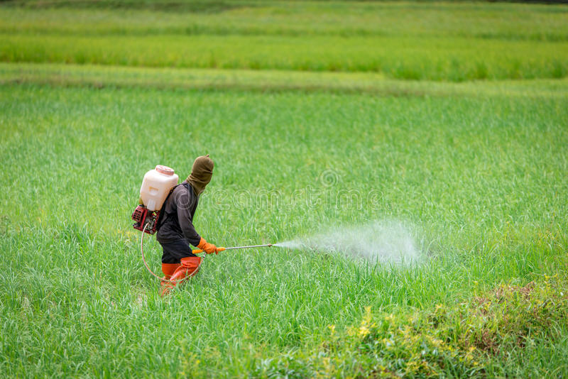

Light :Most plants need sunlight to grow, so it's important to choose a location that provides the right amount of light for the specific plant you're growing.
Watering : Adequate watering is essential for plant growth. Different plants have different water requirements, so it's important to research the specific needs of the plant you are growing

Soil preparation: The type of soil you use is important for the growth of the plant. The soil should be well-draining, rich in organic matter, and have the proper pH level for the specific plant you want to grow.
Fertilization: Proper fertilization is important for plant growth. Different plants have different nutrient requirements, so it's important to research the specific needs of the plant you're growing and choose the right fertilizer.Fertilisation serves to supply the plants with necessary nutrients, in particular in order to ensure that the population is supplied with high quality and low-cost products.
